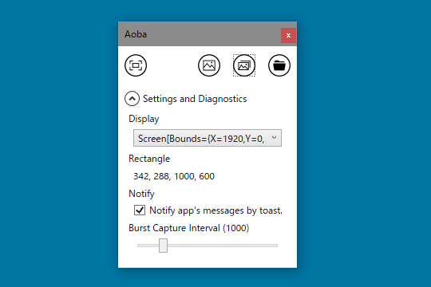
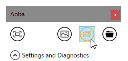
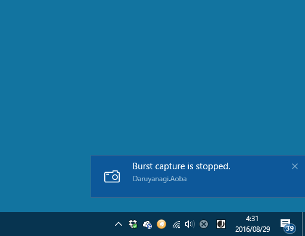
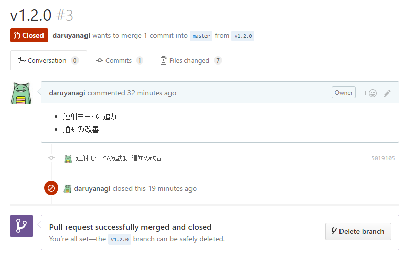
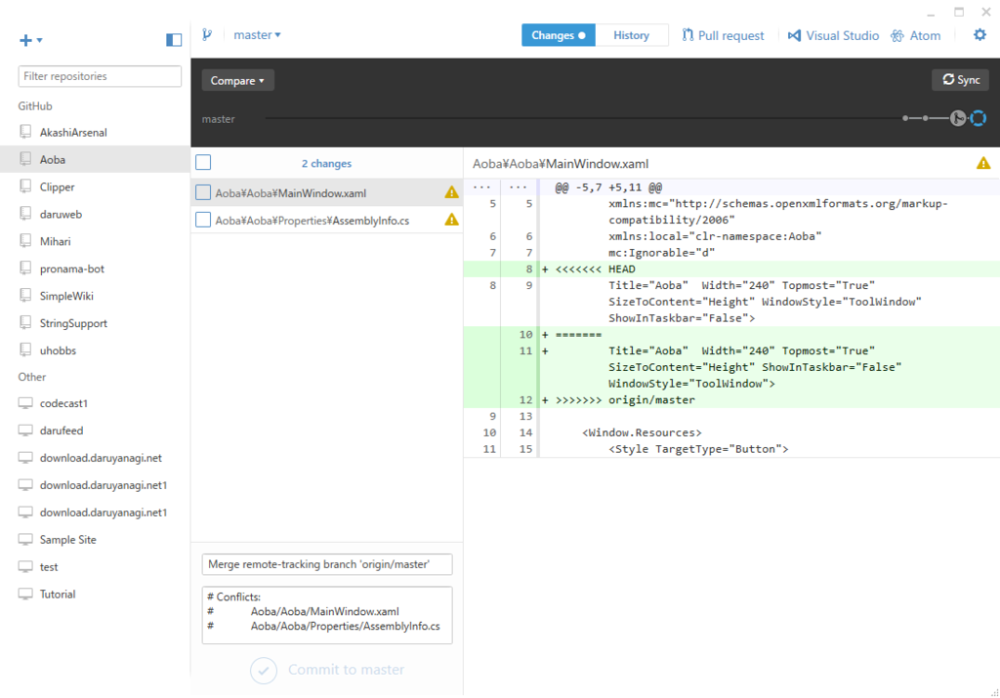

Aoba 1.2.0：連射モードの追加と通知の改善 / GitHub で Pull Request を Merge できなくなった
執筆日時：

連射モードを追加。指定したインターバルでタイマーが動き、取得済みのゲームエリアをパシャパシャするヤツ。タイマーが動いていることを示すインジケーターがいいの思いつかなかったので、とりあえずアイコンをオレンジにしておいた。この辺りは永遠に適当。

ビューに Brush をバインドしたつもりが動かずに悩んだけど、System.Windows.Media ではなく System.Drawing になっていた orz

通知もいい感じにしておいた。通知は切ることもできるけど、ゲームエリアの取得に失敗したときだけはでるようにしている。
Git の使い方わからん
GitHub の Visual Studio 拡張機能を使っていたのだけど、操作をミスって Pull Request を Merge できなくなった。GitHub で「コマンドラインでコンフリクトをなんとかしろやボケ」と言われてしまう（スクショとり忘れた）。
とりあえず閉じておいた。ローカルの master とリモートの master に齟齬ができたみたいだなぁ。

直したいのだけど、やり方がさっぱりわからなかったのだが、「GitHub for Windows」を起動してごちゃごちゃしていると……

なんかコンフリクトのあるファイルが表示されたので、当該部分を消してコミットして Sync しておいた（Sync がなにやってんのかはイマイチよくわからんが）。なんかよくわからんけど助かった……。
Visual Studio 拡張機能にもいいところがあるんだろうけど、ブランチ切って*1、コードをしこしこ書いて、終わったらプルリクエスト作って、GitHub で Merge して、Release を作成する（、ブランチを削除する）っていうのがシームレスにできる「GitHub for Windows」の方が自分はいいかも。手を動かしてるうちに、いろいろ分かってくるかもだし（ただし、Sync はイマイチよくわからん）。
*1:今回はここで間違ったみたい。remote と local が同期されていないのに remote からブランチをきって local にコミットしたのか？